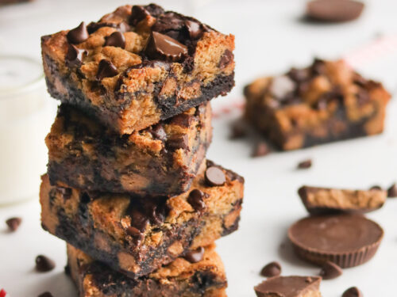
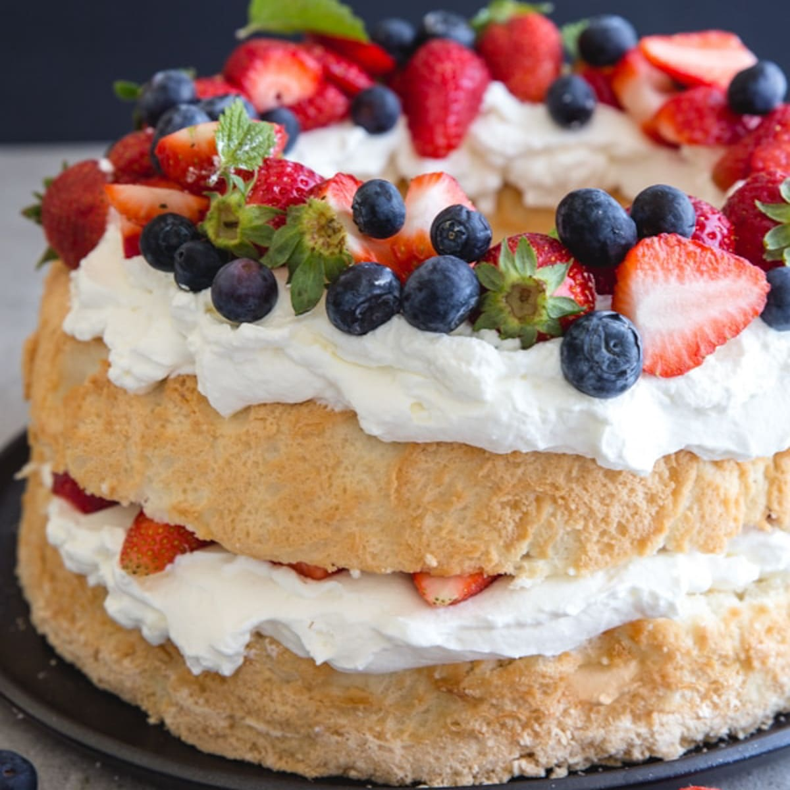
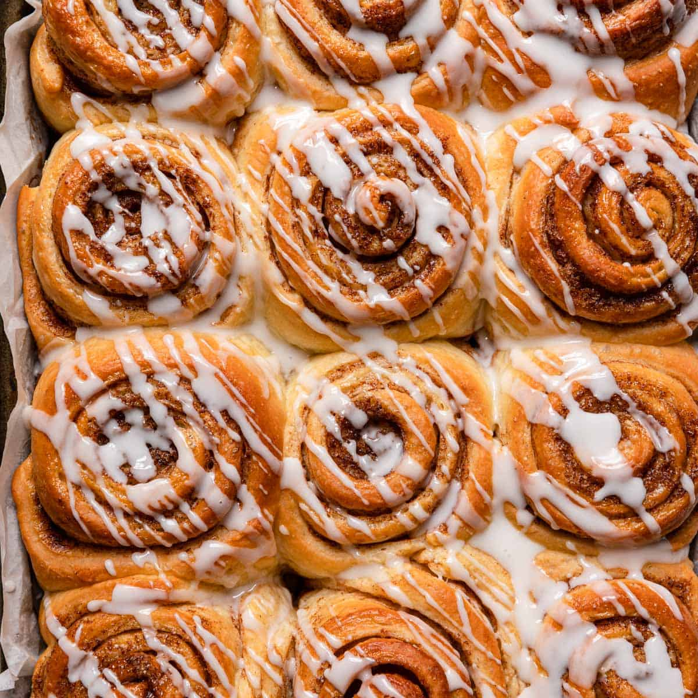

The Starving Artist CookBook
Brookies
Total time:
60 minutes.
Prep time: 20 minutes.
Cook time: 40 minutes.
Brookies

INGREDIANTS
-
1 box Ghirardelli brownie mix.
-
12 Tablespoons of butter
-
1 cup brown sugar
-
1/2 cup granulated sugar
-
1 large egg
-
i additonal egg yolk
-
2 teaspoons vanilla extract
-
2 cups of flour
-
1/2 teaspoon baking soda
-
1/2 teaspoon salt
-
1 1/2 cups chocolkate chips
INSTRUCTIONS
-
Preheat oven to 325 degrees. Line a 9×13 pan with
parchment for easy clean-up and cutting.
-
Prepare brownie mix according to package instructions
and pour into prepared pan. Do not bake yet.
-
In your empty brownie bowl, add melted butter, sugar,
brown sugar, egg and yolk, and vanilla an stir to
combine. Add flour, soda, and salt and stir.
Finally fold in chocolate chips until just mixed.
-
Use your hands to drop flattened pieces dough onto the
top of the brownie batter, it's okay if some brownie
batter shows through and your cookie layer can be rough
and lumpy!
-
Bake for 35-45 minutes until cookie part looks set and
evenly cooked. Poke a skewer or tooth pick in the
middle to ensure you don't have wet batter on your
brownie layer- moist crumbs and melted chocolate are
okay though!
This can be a tricky step when you can't see the
brownie layer. In my oven, with a Ghirardelli brownie
mix, my bake time is always between 35-40 minutes
(usually right at 40). All ovens bake differently so
be sure to keep an eye on your pan and test with a
toothpick in the center before you pull them.
-
For best results, cool completely before cutting and
serving. (Unless you're serving over ice cream, in
which case, by all means scoop them up warm!)
Total time:
60 minutes.
Prep time: 20 minutes.
Cook time: 40 minutes.
Angel Cake

INGREDIANTS
-
Granulated sugar
-
Cake Flour
-
Salt
-
Egg Whites
-
cream of tartar
-
vanilla extract
INSTRUCTIONS
-
Pulse the granulated sugar into superfine sugar.
Use a food processor or blender.
-
Set 1 cup of the superfine sugar aside. You’ll add it
to the egg whites.
-
Add cake flour and salt to food processor.
Pulse them with the remaining sugar. This aerates the
dry ingredients.
-
Beat egg whites and cream of tartar together.
Beat on medium-low speed until foamy.
-
Slowly add 1 cup of superfine sugar. Turn the mixer up
to medium-high and pour in the superfine sugar you set
aside.
-
Beat into soft peaks. Whip the egg whites, cream of
tartar, and superfine sugar into soft and lofty peaks.
This takes at least 5 minutes. After that, add the
vanilla.
-
Sift and fold in dry ingredients. In 3 additions,
sift and fold in the dry ingredients.
-
Pour/spread batter into a tube pan. Do not grease the
tube pan. Greasing the pan causes the batter to slip
down the sides, preventing it from properly rising.
If you already greased it, wash and wipe it completely
clean.
-
Bake at 325°F (163°C). A higher temperature won’t
properly cook the cake.
-
Cool upside down on a wire rack. If cooled upright,
the cake’s own weight will crush itself. Cool it
upside-down on a cooling rack so it holds its shape and
air can reach it.
-
Run a thin knife around the edges to release. Tap
the pan on the counter a few times to help loosen the
cake, too.
-
Slice with a serrated knife. A regular sharp knife
squishes the cake.
Cinnamon rolls
Total time:
60 minutes.
Prep time: 20 minutes.
Cook time: 40 minutes.
Angel Cake

INGREDIANTS
-
Whole milk
-
Sugar
-
Yeast
-
Butter
-
Eggs
-
Salt
-
Flour
INSTRUCTIONS
-
Prepare the dough: Whisk the warm milk, 2 Tablespoons of
sugar, and the yeast together in the bowl of your stand
mixer fitted with a dough hook or paddle attachment.
Cover and allow mixture to sit for 5–10 minutes or
until foamy on the surface.
-
Add the remaining sugar and the butter and beat on medium
speed until the butter is slightly broken up. Add about 1
cup (125g) of the flour, the eggs, and salt and beat on
low speed for 30 seconds. Scrape down the sides of the
bowl, then add the remaining flour. Beat on medium speed
until the dough comes together and pulls away from the
sides of the bowl, about 2 minutes. Dough will be soft.
If it seems too sticky and clings to the sides of the
bowl instead of forming a rough mass around the dough
hook or spoon, add more flour, 1 Tablespoon at a time,
and continue to mix until the dough pulls away from the
sides of the bowl but is still moist and tacky. If it
feels dry and crumbly, add more milk, 1 teaspoon at a
time, mixing well after each addition.
-
Knead the dough: Keep the dough in the mixer
(and switch to the dough hook if you used the paddle)
and beat on low speed for an additional 5 full minutes,
or knead by hand on a lightly floured surface for 5
full minutes. (If you’re new to bread-baking, my How
to Knead Dough video tutorial can help here.) If the
dough becomes too sticky during the kneading process,
sprinkle 1 teaspoon of flour at a time on the dough or
on the work surface/in the bowl to make a soft,
slightly tacky dough. Do not add more flour than you
need because you do not want a dry dough. After
kneading, the dough should feel smooth, supple, and
elastic.
-
1st Rise: Lightly grease a large bowl with oil or butter
(or use nonstick spray). Place the dough in the bowl,
turning it to coat all sides in the oil. Cover the bowl
with plastic wrap or a clean kitchen towel. Allow the
dough to rise at room temperature for 1 and 1/2 to 2
hours or until doubled in size. (I always let it rise on
the counter and it takes about 2 hours.)
-
Grease the bottom and sides of a 9×13-inch baking dish
(glass or metal) or line it with parchment paper.
-
Roll out the dough: Punch down the dough to release the
air. Place dough on a lightly floured work surface and
using a lightly floured rolling pin, roll dough into a
12×18-inch rectangle. Make sure the dough is smooth and
evenly thick. If the dough keeps shrinking as you roll
it out, stop what you’re doing, cover it lightly, and
let it rest for 10 minutes to relax the gluten. When
you return to the dough, it should stretch out much
easier.
-
For the filling: Spread the softened butter all over the
dough. The softer the butter is, the easier it is to
spread in this step. (Microwave it for a few seconds to
soften if needed.) In a small bowl, mix the brown sugar
and cinnamon together. Sprinkle evenly over the butter.
Tightly roll up the dough to form an 18-inch-long log.
If some filling spills out, sprinkle it on top of the
roll. With an extra-sharp knife, cut into 12 even rolls,
about 1.5 inches thick. Arrange in the prepared baking
pan.
-
2nd Rise: Cover the pan and allow the rolls to rise until
puffy, about 1 hour. (Or use the overnight option in the
Notes below.)
-
Preheat the oven to 350°F (177°C).
-
Bake for about 25–28 minutes or until they are lightly
browned on top, rotating the pan halfway through. If the
tops are browning too quickly, loosely tent a piece of
aluminum foil over the top of the pan. Remove pan from
the oven and place pan on a cooling rack for about 10
minutes while you make the icing.
-
Make the icing: In a large bowl using a handheld or
stand mixer fitted with a paddle or whisk attachment,
beat the cream cheese on medium speed until smooth and
creamy. Add the confectioners’ sugar, cream/milk, and
vanilla. Beat on low speed for 30 seconds, then increase
to high speed and beat for 1 minute. Spread the icing
over the warm rolls and serve immediately.
-
Cover leftover frosted or unfrosted rolls tightly and
store at room temperature for up to 2 days or in the
refrigerator for up to 5 days.